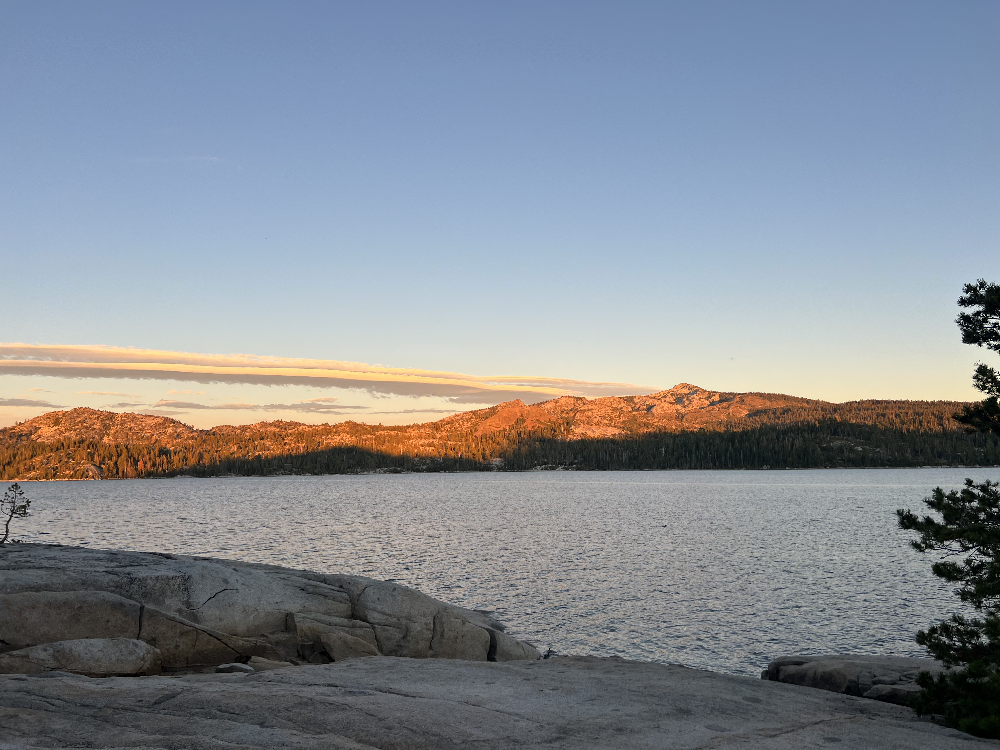

10.29.25
Alejandra’s image is of nature. It shows the water, sunset, and mountain. The most interesting thing is the sunset and how the sun shines on a part of the mountain. It is also interesting because it is obvious that it shows scenery and we can see that Alejandra was either hiking or sitting, viewing the scenery, but the most mysterious thing is the mood she felt when she was there. I wonder if she was having a great day while on a hike alone or with friends or if she went there because she was having a hard time. To push the visual thinking, I think it would be nice to show specifically the sunset or water and talk deeper about it. Another idea is also to take the scene throughout the day so that we can see how it looks in the morning, afternoon, and night.

10.29.25
The image of the keychain kuromi is interesting because kuromi has her own characteristics. She is described as a “tomboy” with a black hood with a pink skull motif and spiky ears. She also has a hidden girly side and enjoys reading romantic novels and writing in her diary. Her birthday is on October 31.
This image relates to my collection of keychain plushies. My keychain collection shows what characters I like and I am interested in. It also shows my aesthetic and how I like to collect keychain plushies. To update my images, I could take a picture with a background that shows the characters personality or I can take pictures of details of the plushies and describe it.